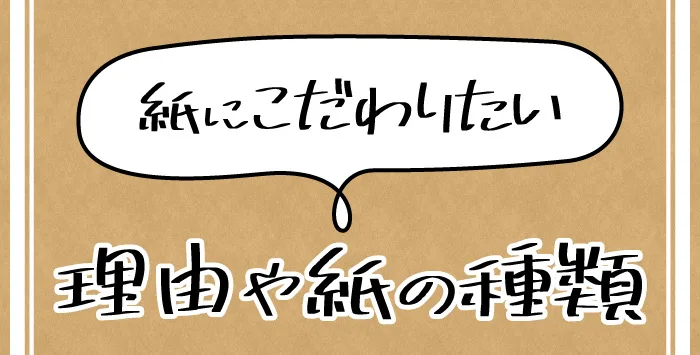
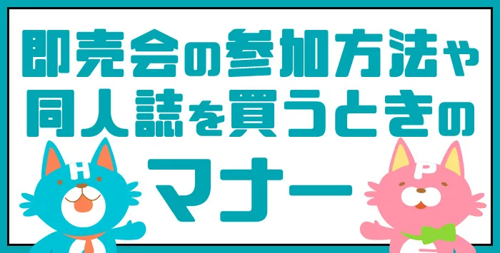

2021.06.05 同人誌の作成をご検討中の方へ！名前の決め方をご説明します！ 同人誌を作る際に悩みがちなのが、自身の名前ですよね。 一度決めると、長い間付き合っていくことになります。 そのため、納得のいく名前にしたいですよね。 そこで今回は、名前の付け方についてご紹介しま… Tweet
2021.06.01 同人誌を作りたい方必見！制作期間についてご説明します！ 「同人誌を作りたいけど、いつから始めれば良いのかな」 「どのくらいで完成するのだろう」 このようにお悩みの方はいらっしゃいませんか。 初めて同人誌を作る方の中には、いつ作り始めれば良いか分か… Tweet
2021.05.28 同人誌を初めて作る方必見！値段の付け方を解説します！ 同人誌を作る際に知っていただきたいのが、値段の付け方です。 同人誌を初めて作る方は、どのようにして値段を付ければ良いか分からない方もいらっしゃいますよね。 値段の付け方には、さまざまな方法がありま… Tweet
 2021.05.24 同人誌を初めて作る方へ！紙の種類についてご紹介します！ 同人誌を初めて作る方にこだわっていただきたいのが、紙の種類です。 同人誌の紙の種類には、さまざまなものがあることをご存知ですか。 今回は、紙にこだわりたい理由や紙の種類をご説明します。 ぜひ… Tweet
 2021.05.20 即売会に参加する方へ！参加方法や同人誌の買い方を解説します！ 初めて即売会に参加する方の中には、参加方法や同人誌の買い方が分からない方も多くいらっしゃいますよね。 「特別なマナーがあったらどうしよう」 このような不安を抱えている方もいらっしゃるのではないでし… Tweet
2021.05.16 同人誌を作成したい方必見！タイトルロゴの作り方をご紹介！ 同人誌を作成したい方に知っていただきたいのが、タイトルロゴの作り方です。 目を引く作品にするためにも、タイトルロゴはとても大切ですよね。 そこで今回は、タイトルロゴの作り方をデザイン例とともにご紹… Tweet


 HOPE TALK
HOPE TALK